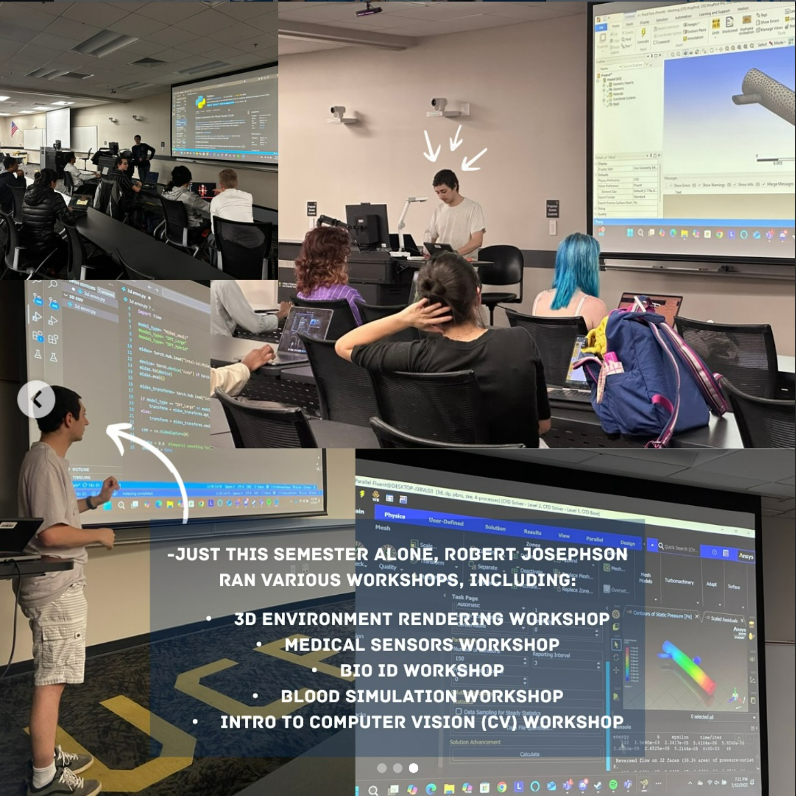
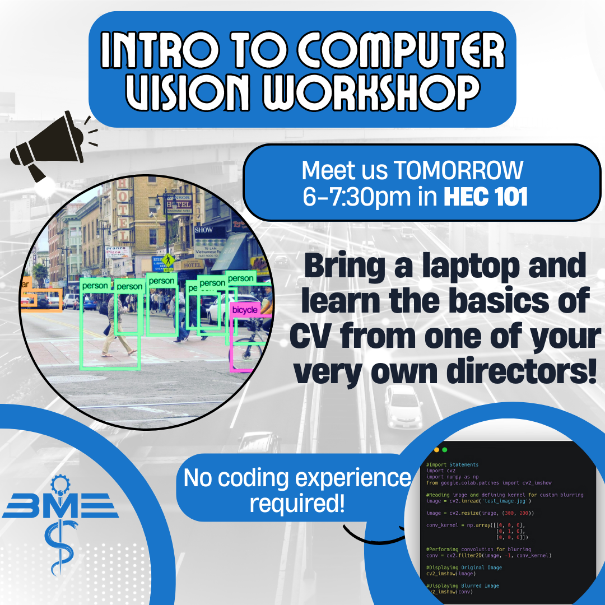
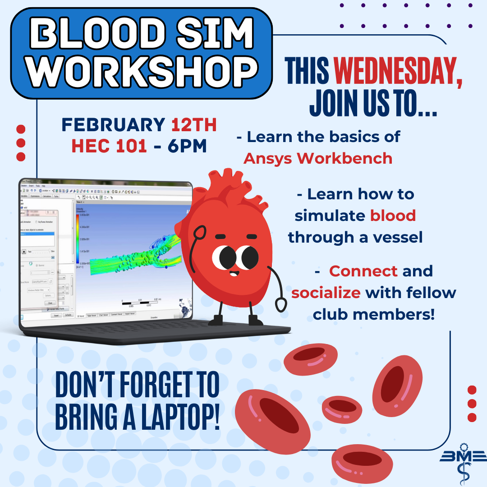
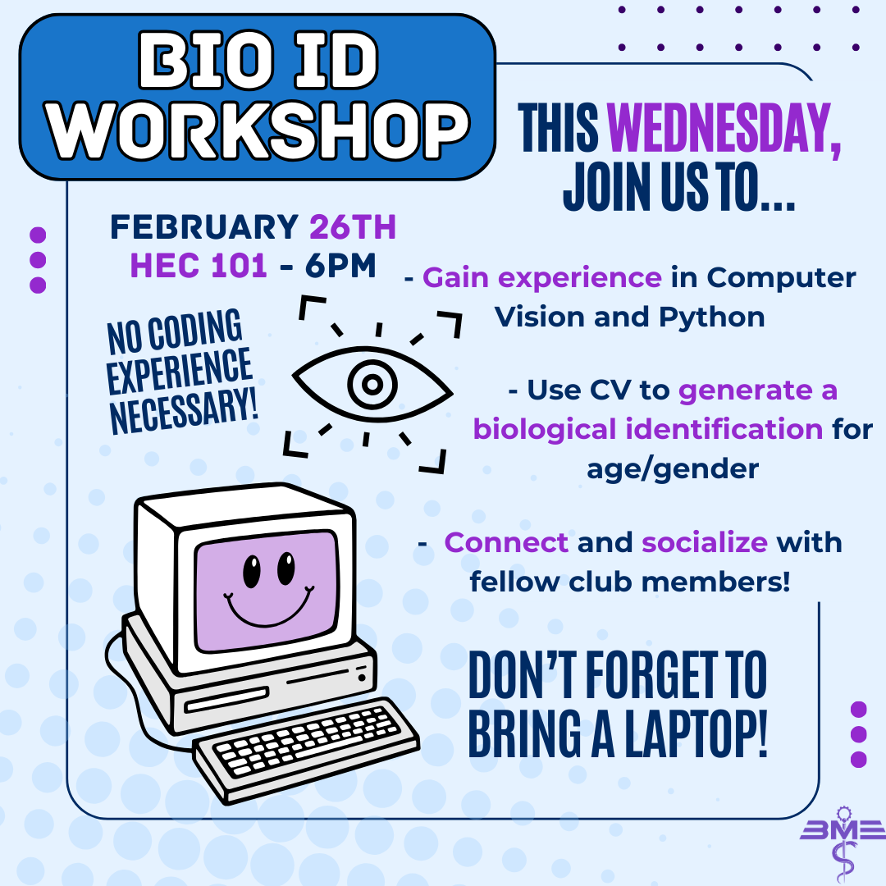
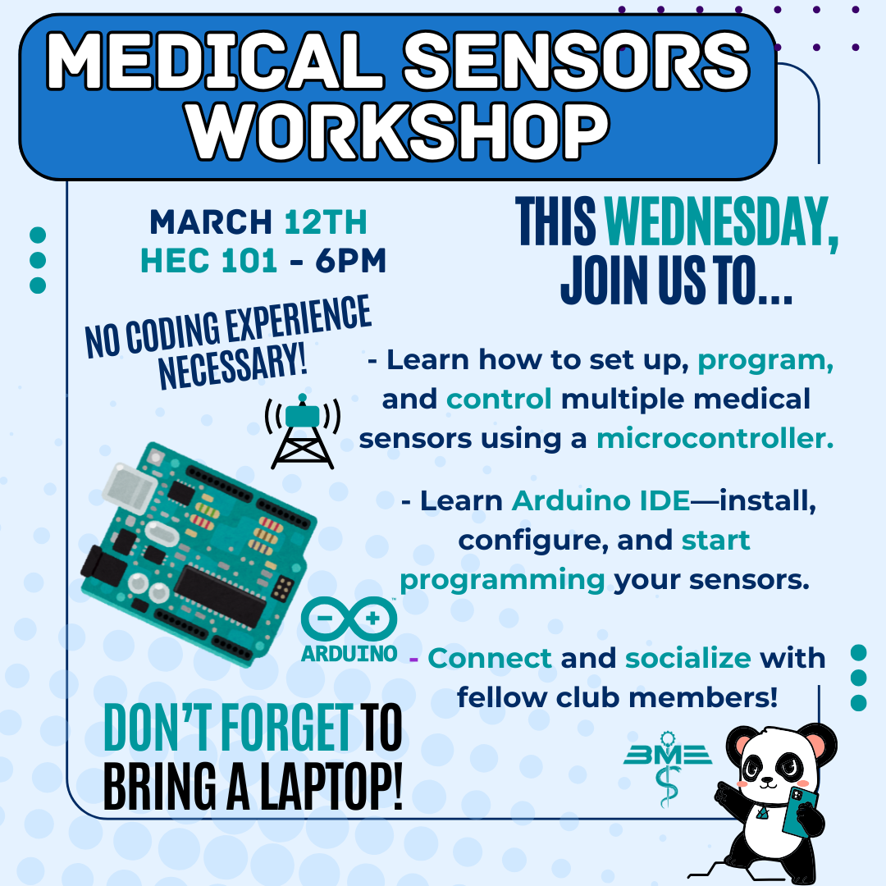

Workshops and Learning Outcomes
Throughout my academic career I lead various workshops from computer vision, simulation and computer hardware. I particapated in some workshops which mainly dealt with hardware design. Many particapance that came to the workshops gained knowledge in technical skills. Feel free to checkout the workshops and the skills learned from them!
Intro to OpenCV
Basics to image processing
3D Environment Rendering
3D environment rendering program
Biometric ID
3D environment rendering program
Blood Flow Simulation
3D environment rendering program
Medical Sensors
Utilizing medical sensors
UART/I2C Communication
Understanding UART & I2C communication protocols
Paper Speaker
Designing a paper speaker with electrical components.


Two Sides
I experience two different sides of engineering: hardware based and coding based. When I joined IEEE I was exposed to hardware design from 8-bit muxs to ALU design. I also dealt with using an Arduino with multiple sensors and more electrical setups. When I became the BMES Project Director I ran some workshops dealing with coding such as computer vision and simulation based. I used OpenCV, Mediapipe, and other related libraries to teach participants certain computer vision techniquies. When it came to the simulation workshop I taught about how to setup a fluid simulation using ANSYS Fluent. All of this lead to my learning outcomes...


Learning Outcomes
By being a participant in the various IEEE workshops I gained skills and knowledge in how to use Virlog to design hardware components such as muxs, ALU and registers. When I went to the embedded system type workshops I learned how to code multiple sensors temperature sensors, ultrasonic sensors, and more using Arduino Nano as well as Arduino UNO boards. The electrical based workshops taught me how to setup circuits on a breadboard with various components. I also learned about the vibration of magnets which can be used to generate sound waves. On the coding side I was able to learn and teach others how to use OpenCV with other libraries such as Mediapipe to create a computer vision application. After teaching many different techniquies related to computer vision I have a better understanding of how image, video and detection processes work. In the simulation workshop I taught I gained a valuable skill in how to use ANSYS Fluent to create a blood flow simulation. I learned all about the setup, meshing, running the simulation and understanding the results. All of these skills and knowledge I gained from the workshops have helped me grow as an engineer in both hardware and software aspects.